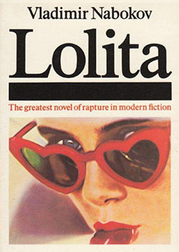
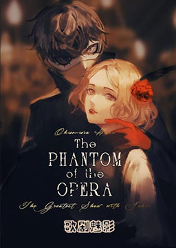
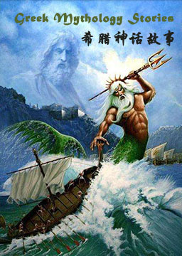
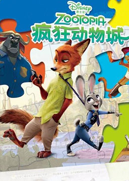
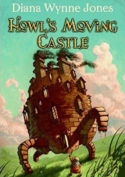

双语小说
收录中英文双语小说300多部，包括世界经典名著、社会小说、悬疑小说等短篇和长篇小说，可按照初中难度、高中难度和大学难度分类阅读，每部小说都有分段中英文对照，点击单词可查看中文翻译。
摆渡人 (Ferryman)
作者：克莱儿·麦克福尔 (Claire Mcfall) [英国]
本书摘得五项世界文学奖，版权销售33个国家，是令千万读者灵魂震颤的心灵治愈小说。内容简介：单亲女孩迪伦，15岁的她，世界却一片狼藉：与母亲总是无话可说，在学校里经常受到同学的捉弄，唯一谈得来的好友也因为转学离开了。这一切都让迪伦感到无比痛苦。她决定去看望久未谋面的父亲，然而，路上突发交通事故。等她拼命爬出火车残骸之后，却惊恐地发现，自己好像是唯一的幸存者，而眼前，竟是一片荒原。此时，迪伦看到不远处的山坡上有一个男孩的身影。男孩将她带离了事故现场。但是，迪伦很快意识到，男孩并不是偶然出现的路人，他似乎是特意在此等候。命运，从他们相遇的那刻开始，发生了无法预料的转变。
洛丽塔 (Lolita)
作者：弗拉基米尔·纳博科夫 (Vladimir Vladimirovich Nabokov) [美国]
小说最初未获准在美国发行，于1955年首次被欧洲巴黎奥林匹亚出版社出版。1958年终于出版了美国版，作品一路蹿升到《纽约时报》畅销书单的第一位。《洛丽塔》已被改编成电影。内容简介：从法国移民美国的中年男子，大学教师亨伯特爱上了自己房东的女儿，14岁的洛丽塔。亨伯特对洛丽塔无法自拔，为了亲近这名早熟、热情的小女孩，亨伯特娶女房东为妻，成为洛丽塔的继父。当夏洛特翻看亨伯特的日记得知他爱上了自己的女儿之后，愤怒的她冲出房门，却不幸在车祸中丧生。于是亨伯特把洛丽塔从夏令营当中接回来，二人开始了一段开车在公路上流浪的乱伦之恋。洛丽塔长大后，开始讨厌继父，她意识到“即使是最可悲的家庭生活也比这种乱伦状况好”。于是她开始跟年纪相当的男孩子交往，并借着一次旅行的机会脱离继父的掌握。当亨伯特再次收到洛丽塔的信时，她已经嫁作人妇，并且有孕在身。面对洛丽塔在金钱方面的请求，他决定满足她。他留给洛丽塔4000块钱，却没有办法把洛丽塔带走。在绝望之中，他枪杀了当初拐带洛丽塔的人奎迪。亨伯特最终病死在了监狱里，同年，洛丽塔死于难产。
歌剧魅影（简化版） (The Phantom Of The Opera)
作者：加斯通·勒鲁 (Gaston Leroux) [法国]
在巴黎的一家歌剧院里，怪事频繁地发生，原来的首席女主角险些被砸死，剧院出现一个令人毛骨悚然的虚幻男声。这个声音来自住在剧院地下迷宫的“幽灵”，他爱上了女演员克丽斯汀，暗中教她唱歌，帮她获得女主角的位置，而克丽斯汀却爱着剧院经济人拉乌尔，由此引起了嫉妒、追逐、谋杀等一系列情节。而最终“幽灵”发现自己对克丽斯汀的爱已经超过了个人的占有欲，于是解脱了克丽斯汀，留下披风和面具，独自消失在昏暗的地下迷宫里。
高中英语3500词汇故事 (Senior high school English 3500 words)
作者：未知 (unknow) [中国]
把高中英语3500个单词巧妙地编成40篇小故事，将单词放在文段中去理解，联系上下文，加以一定的推测。而且文章是连贯的、具象的，更加能够加深印象，提升记单词的效率。仙境之桥 (Bridge to Terabithia)
作者：凯塞琳·帕特森 (Katherine Paterson) [美国]
美国文坛20世纪备受称赞的经典小说之一，在全世界销售了200万本。该小说曾荣获纽伯瑞儿童文学奖。内容简介：十岁的男孩杰西住在乡下农场，有四个姐妹与永远做不完的家事。他喜欢绘画，但不被认可，郁闷的他想要通过赛跑夺冠证明自己的价值。但女孩莱斯莉却在开学第一天就打败了他。沉默寡言的杰西一度对开朗不羁的莱斯莉很反感，但两个“怪胎”却渐渐成为莫逆之交。他们在树林深处，荡着“施了魔咒”的绳子进入一个叫特雷比西亚的幻想王国尽情玩耍。直到有一天,绳子突然断了，那扇由莱斯莉开启的王国之门，是否从此对杰西关闭了？可不可以有一座桥，能再次引领杰西通往特雷比西亚？一天 (One Day)
作者：大卫·尼克尔森 (David Nicholls) [英国]
获选英国《卫报》“年度图书“、《ELLE》杂志“夏季好书”、“理查与茱蒂”俱乐部选书、“世界读书夜”选书。内容简介：1988年7月15日，艾玛和德斯特在毕业晚会上一见钟情，一夜缠绵之后，他们即将踏上新的人生旅途。临行之际，他们约定成为好朋友，并在之后每年的7月15日那天见面。工人家庭出身的艾玛梦想着能让世界变得更美好，而有钱的花花公子德斯特则希望游戏人间。20年中，曾经朝气蓬勃、怀揣理想的他们也不得不向残酷的现实低头。艾玛的工作际遇和感情生活都不理想，德斯特成了一个小众的电视名人，终日沉溺在酒精、毒品中，婚姻也岌岌可危。当他们的人生道路不断交汇时，他们的关系也随之改变，友情和争吵，希望和失落，泪水和欢笑。在这段人生的旅途中，两人蓦然回首，终于发现一直寻寻觅觅，最好的其实早在身边。
希腊神话故事 (Greek Mythology Stories)
作者：未知 (unknow) [古希腊]
本书由神的故事和英雄传说两部分组成。神的故事涉及宇宙、人类起源、神的诞生等内容；英雄传说则主要讴歌英雄的事迹，同时也批判人性的种种丑恶。整体来看，这本书不仅生动再现了古希腊的历史进程，而且也是当时社会生活的真实写照。它涉及了战争与和平、英勇与懦弱、爱情与诡计、美德与奸诈、忠诚与背弃等一些人类文明进程中的永恒主题。
疯狂动物城 (Zootopia)
作者：迪士尼 (Disney) [美国]
一个现代化的动物都市，每种动物在这里都有自己的居所，有沙漠气候的撒哈拉广场、常年严寒的冰川镇等等，它就像一座大熔炉，动物们在这里和平共处，无论是大象还是小老鼠，只要努力，都能闯出一番名堂。兔子朱迪从小就梦想能成为动物城市的警察，尽管身边的所有人都觉得兔子不可能当上警察，但她还是通过自己的努力，跻身到了全是大块头动物城警察局，成为了第一个兔子警官。为了证明自己，她决心侦破一桩神秘案件。追寻真相的路上，朱迪迫使在动物城里以坑蒙拐骗为生的狐狸尼克帮助自己，却发现这桩案件背后隐藏着一个意欲颠覆动物城的巨大阴谋，他们不得不联手合作，去尝试揭开隐藏在这巨大阴谋后的真相。冰雪奇缘 (Forzen)
作者：迪士尼 (Disney) [美国]
艾莎天生具有制造冰雪的神奇能力，然而随着年龄的增长，她的能力越来越强，甚至险些夺走妹妹的生命。艾莎从此变得自我封闭，并向世人隐藏了拥有魔法的秘密。阿伦黛尔的国王和王后在一次海难中丧生；悲哀的海难过后，艾莎终于到了加冕的年龄，各国王公齐来祝贺。艾莎战战兢兢，唯恐被人识破隐藏了多年的秘密。然而当听说安娜将要和初次见面的南方小岛王子汉斯结婚时，依然情绪失控露出了马脚。在此之后她逃到山中，构建了属于自己的冰雪宫殿，而阿伦黛尔也陷入可怕的寒冷之中。 安娜为了拯救姐姐和阿伦黛尔王国，独自来到山中，在山民克里斯托夫的帮助下总算来到姐姐的宫殿，成功找回了姐姐。
哈尔的移动城堡 (Howl's Moving Castle)
作者：戴安娜·韦恩·琼斯 (Diana Wynne Jones) [英国]
宫崎骏杰作《哈尔的移动城堡》小说原著，英国幻想文学大师戴安娜·韦恩·琼斯杰作。内容简介：苏菲是三姐妹中的老大，命运待她并不好。除非她离家寻找自己的命运，否则注定悲剧性地失败。可当苏菲无意间惹怒了荒地女巫后，她发现自己被施了一个可怕的咒语，变成了一个老太婆。破除咒语唯一的希望就在山上永动的移动城堡：哈尔巫师的城堡。为了限免妖术，苏菲必须应付没心没肺的哈尔，和火魔达成契约，直面荒地女巫。一路走来，她重新认识了哈尔和她自己。